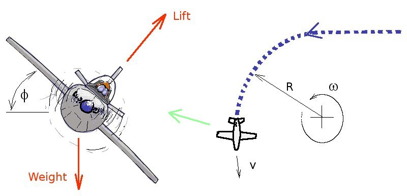
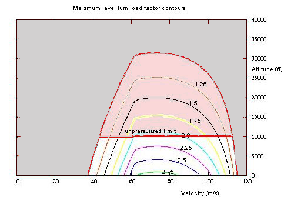

MANOEUVRES
In order to manoeuvre or turn an aircraft, additional energy must be expended. For the case of a steady level turn, an equilibrium of forces can be used to analyse the situation and determine relevant turn parameters.

If the aircraft is in a balanced turn at a constant airspeed then the following forces are applied to the aircraft. Lift will act at right angles to the fuselage reference line, weight will act vertically down. So to maintain a level turn the lift will need to be increased so that is vertical component balances the weight.
$$W=L\cos(φ)$$
thus
$$L=W/{\cos(φ)}=nW$$
where $n$ is called the load factor and $1\/n = \cos(φ)$
The unbalanced horizontal component of the Lift ($L\cos(φ)$) will cause an acceleration of the aircraft in a direction at right angles to the flight path. As the flight path will be tangent to a circle based on the turn radius ($R$), this acceleration will be the angular acceleration of the turn.
$$ω^2Rm=L\sin(φ)$$
where ($m$) is the mass of the aircraft, ($W = mg$).
Hence the bank angle ($φ$) and the aircraft velocity ($V$) will determine the rate and size of turn, since $V = ω.R$
$$V^2/R^2Rm=W/{\cos(φ)}sin(φ)$$
thus since $W=mg$
$$R=V^2/g \cot(φ)$$
and
$$ω=V/R=g/V \tan(φ)$$
While these predictions are relatively simple, there are some hidden limiting conditions that must be accounted for. As a lift increase is required for a turn, without change in speed or altitude, the only way to do this is to increase the angle of attack ($α$). Hence $C_L$ increases but $C_L={nW}/{1/2 ρV^2S} $ must be kept less than $C_L(max)$.
As lift increases, lift induced drag ($K.{C_L}^2$) will increase, so the excess power balance must be maintained with $T=D$ such that $P_s=0$. Thrust will also need to be increased compared to level flight and required thrust must not exceed the maximum available at the altitude, otherwise a minimum $P_s = 0$ will not be able to be maintained. If the maximum thrust requirement is exceeded then $P_s$ will become negative and only descending or lower rate turns will be possible.
The load factor information can be evaluated along with specific excess power to determine the maximum load factor possible at a given speed and altitude whilst still maintaining at least $P_s=0$. This is shown in the following graph.

Separately it is possible to determine the turn rate available at these load factors. By mapping, contours of maximum turn rate for different speeds and altitudes can be obtained.
Note that the stall speed becomes significantly larger at higher load factors and this will produce significant limitation for the aircraft's operation at lower speed.
These are not simple calculations. For each altitude and velocity point, different load factors produce different values of $P_s$ and turn rates. An interpolation technique as shown in the MATLAB script shown here will be required.